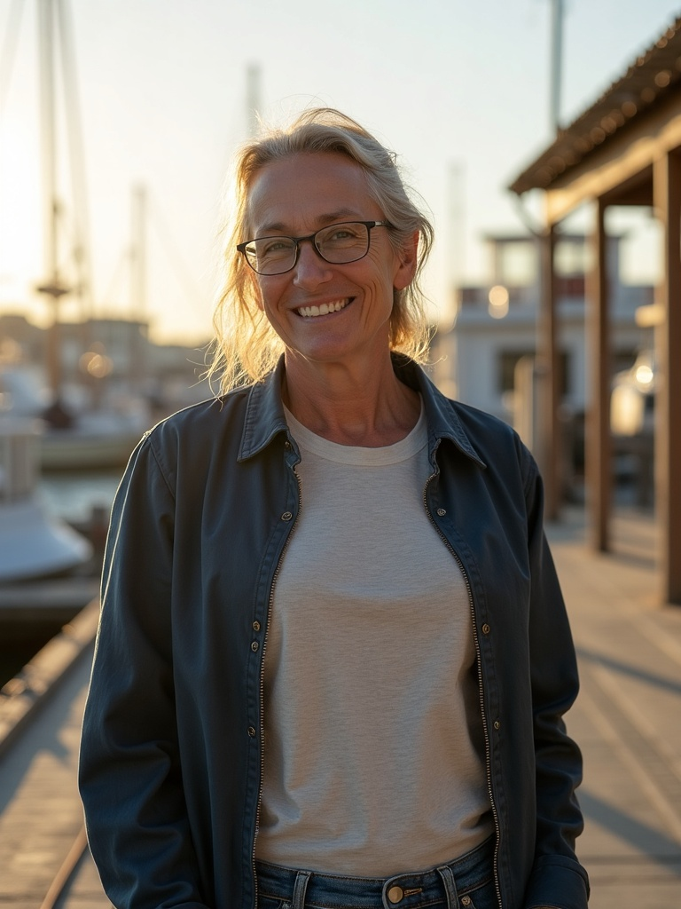
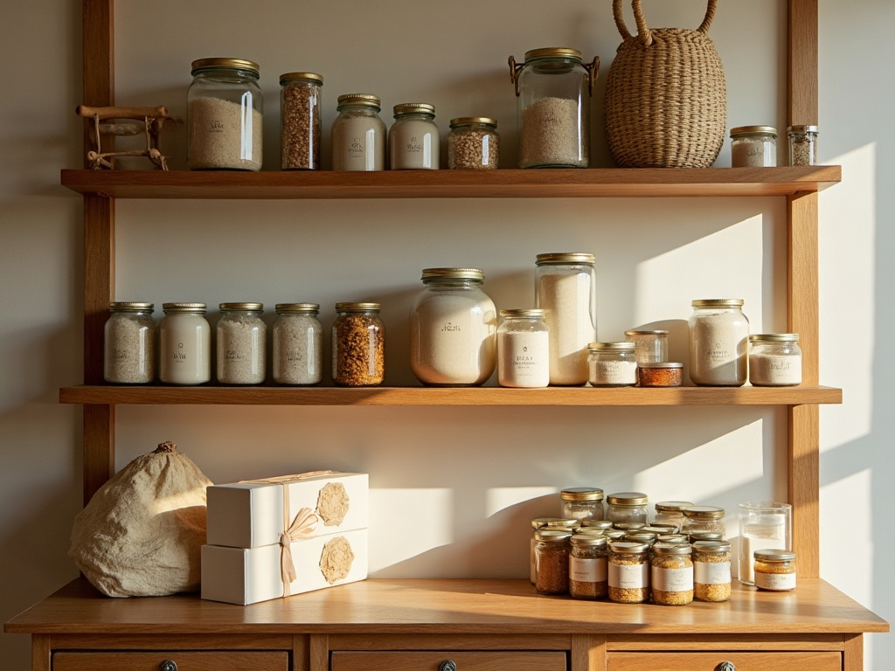
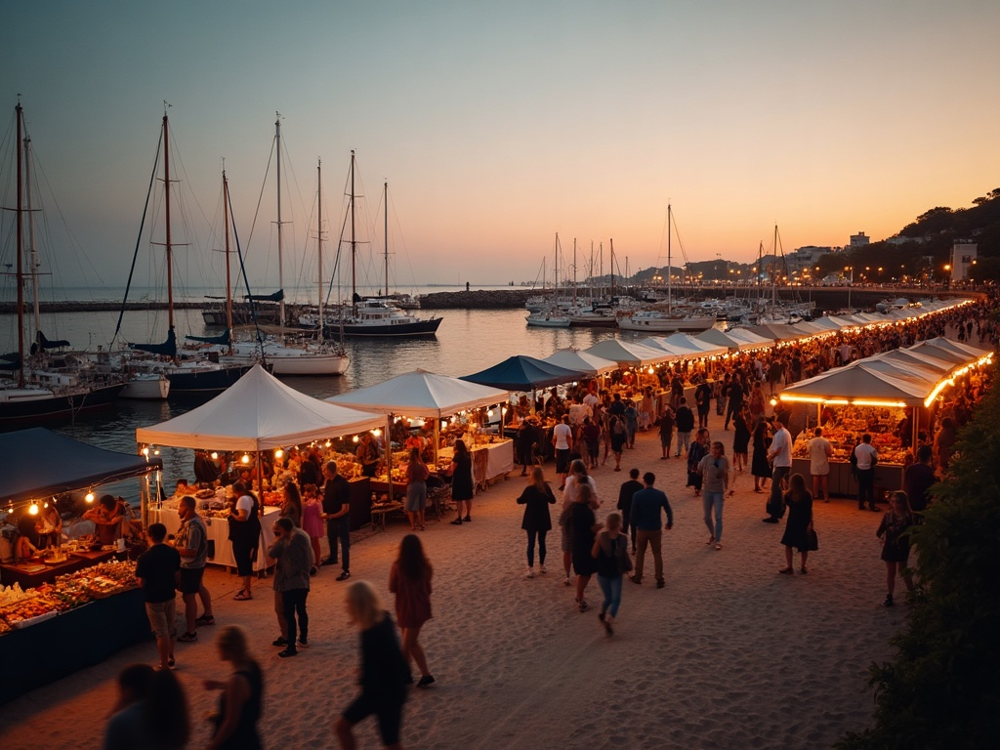
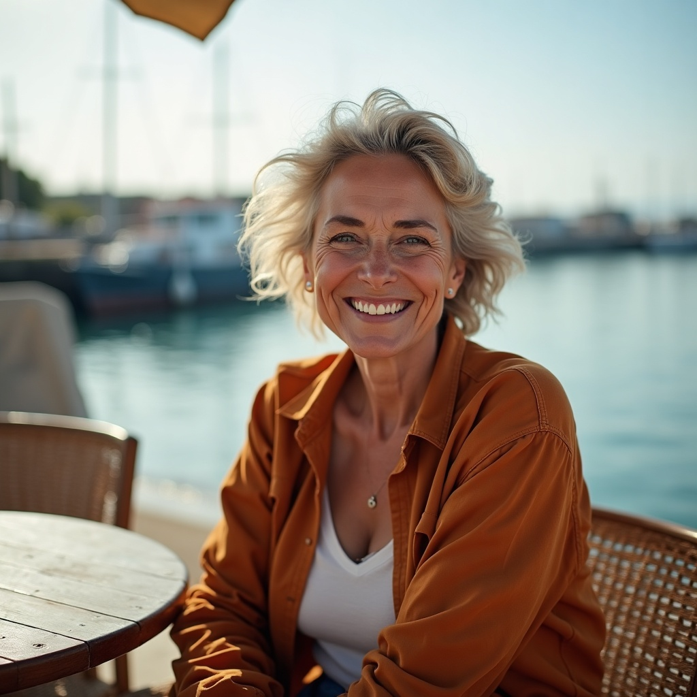

Hand-harvested on the harbor · since 2019
Harborline began as one cart on the dock and grew into a coastal pantry shipped across the country — still sourced by hand, still a day's drive from the water.
We believe a pantry should taste like a place. Everything we box is traced to a maker we know by name — harvested, steeped, or pressed within a day's drive of the dock.

Founder & head of provisioning
Maren grew up working summers on the harbor and started Harborline in 2019 from a single dockside cart — flake salt raked from the flats and cold-brew steeped overnight. What began as a Saturday ritual for a handful of neighbors is now a coastal pantry shipped nationwide, with a café back on the dock where it all started. The principle hasn't moved: know the maker, source by hand, box only what we'd put on our own table.
Recognized along the coast
Provisioning partners

A wholesale provisioning partnership: a co-curated shelf of Harborline pantry goods stocked in the museum's gift shop, packaged to carry the harbor's story home.

Named the official provisioner of Harbor Festival 2025 — pouring dockside cold-brew and boxing the festival's welcome provisions for thousands along the waterfront.
From the dock and the shelf
The dockside counter is my Saturday ritual; the cold-brew alone is worth the walk down.

Dana M.Café regularHarborline moves off our shelves faster than any specialty line we carry.